Welcome to Brainstorm_ArtifactScanTool’s documentation!¶
Features¶
Complete Integration with Brainstorm
Semi-automated exclusion of artifactual channels and epochs (i.e. trials or data blocks)
Heatmap and histogram plotting
Statical and Manual exclusions
Getting Started¶

Data Input¶
Select the subject directories within Brainstorm Database
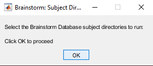 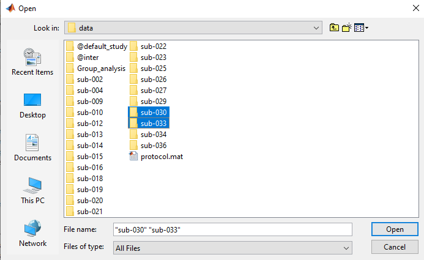Data Type¶
Select the type of data you’re working with: typically blocks with resting state and trials for task-based data
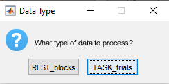
Artifact Calculation¶
Data will load, and Artifact measures (amplitude and gradient) will be calculated…
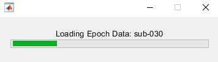 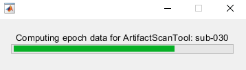Channel Exclusion Method¶
You will then be prompted to select a central tendency method to remove channels/sensors
Options
Mean
Median
Manual
Sensor Layout¶
A topoplot with gradiometer sensor locations will appear.
Note - Currently only Elekta MEGIN gradiometers are plotted. Future releases will include checks for sensor layouts.
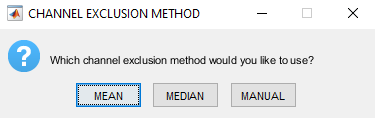Channel Exclusion Deviation Threshold¶
Now enter a deviation cutoff to be applied. This will be standard deviation if “Mean” was selected, or median absolute deviation if “Median” was selected.
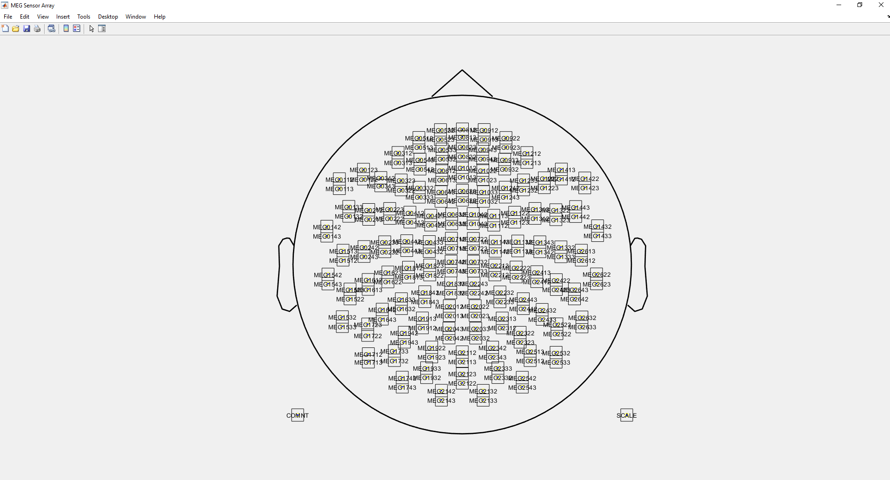Channel Exlcusion Plotting¶
Three figures will popup; one amplitude, one gradient, and one progress report.
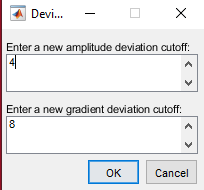 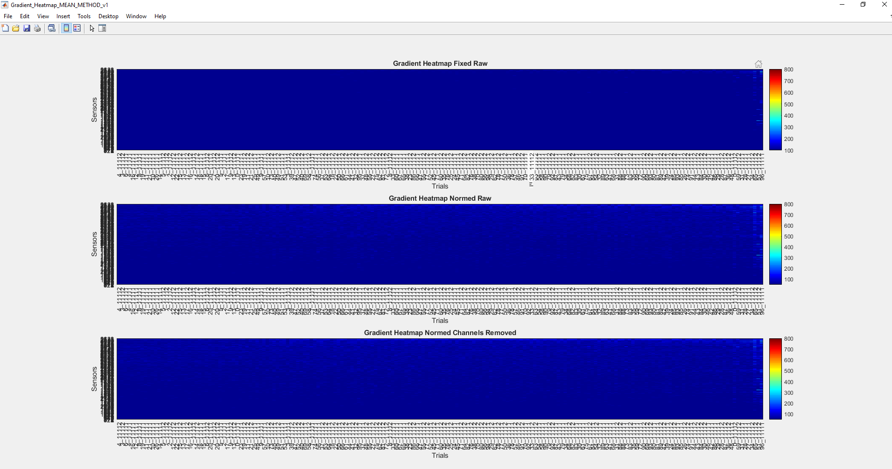 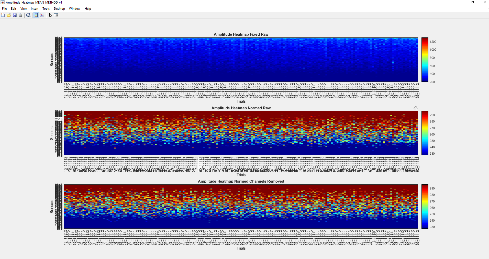Amplitude and Gradient figures will each contain three subplots
Top subplot - fixed color thresholds, no bad channels marked
Middle subplot - color thresholds normalized to the active subject, no bad channels marked
Bottom subplot - color thresholds normalized to the activee subject, bad channels marked (with max colorbar color value)
Progress Report figure will contain
The subject identifier
Which channel exclusion method was selected
Deviation cutoff values
A table with specific channel labels and the flag indication (i.e. amplitude, low signal, gradient)
Note - channels with a low signal 10% or more of data blocks/trials will be automatically marked for removal
Channel Adjustment Decision¶
Determine whether you’d like to change channel exclusion method or adjust thresholds, or continue to trial exclusion

Trial Exclusion Method¶
You will then be prompted to select a central tendency method to remove data blocks/trials
Options
Auto
Manual
Trial Exclusion Deviation Threshold¶
Now enter a deviation cutoff to be applied. This will median absolute deviation, because trial exlcusion used median for central tendency to best fit tails of distribution.
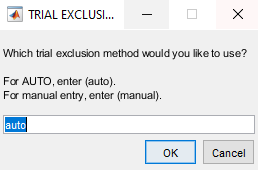Trial Exclusion Plotting¶
Four figures will popup; one amplitude, one gradient, and one progress report.
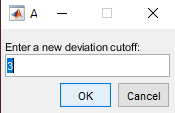 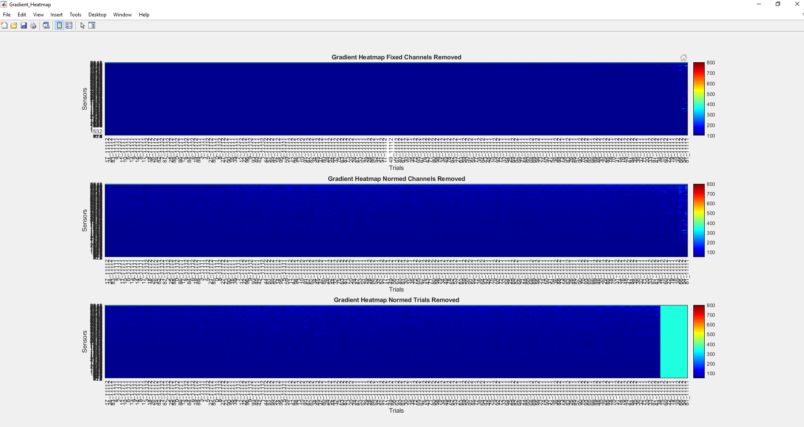
Amplitude and Gradient figures will each contain three subplots
Top subplot - fixed color thresholds, bad channels marked and no bad trials marked
Middle subplot - color thresholds normalized to the active subject, bad channels marked and no bad trials marked
Bottom subplot - color thresholds normalized to the activee subject, bad channels marked and bad trials marked (with max colorbar color value)
Trial distribution figure will contain
Histogram of amplitude values for each trial
Historgram of gradient values for each trial
Note - These values are estimated based on the matrix with bad channels removed (i.e. bad channel data are not included in these plots)
Progress Report figure will contain
The subject identifier
Deviation cutoff values
Amplitude and gradient threshold values
A table with specific counts (pre and post thresholding) for data blocks/trials. If there are multiple conditions, all will be listed
Trial Adjustment Decision¶
Determine whether you’d like to change trial exclusion method or adjust thresholds
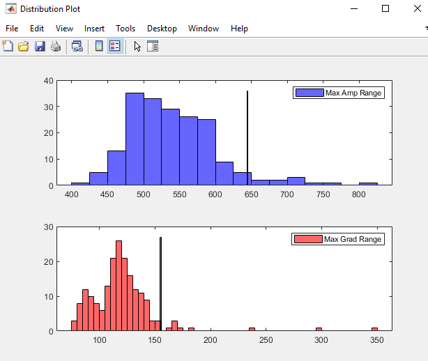ArtifactScan Adjustment Decision¶
Determine whether you’d like to return to the beginning and change channel exclusion method
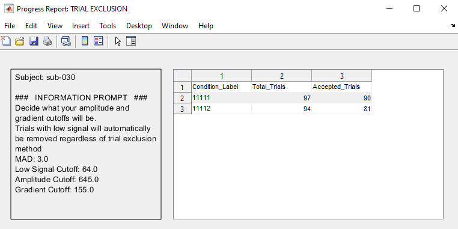Save Results¶
Determine whether you’d like to save results and move on to next subject
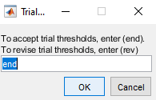 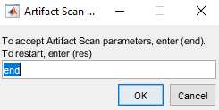
 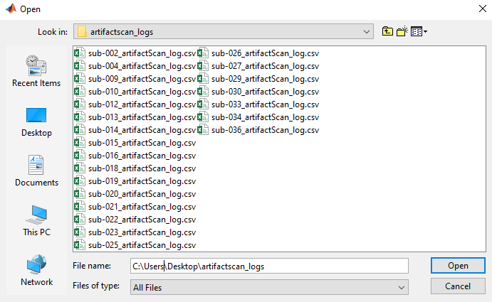
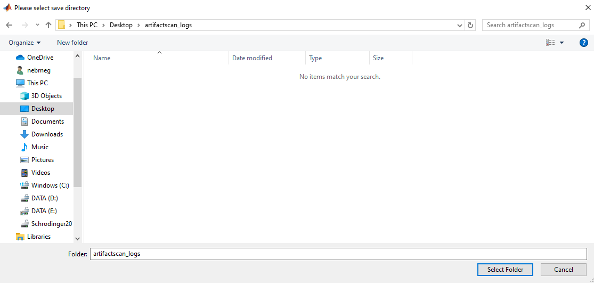
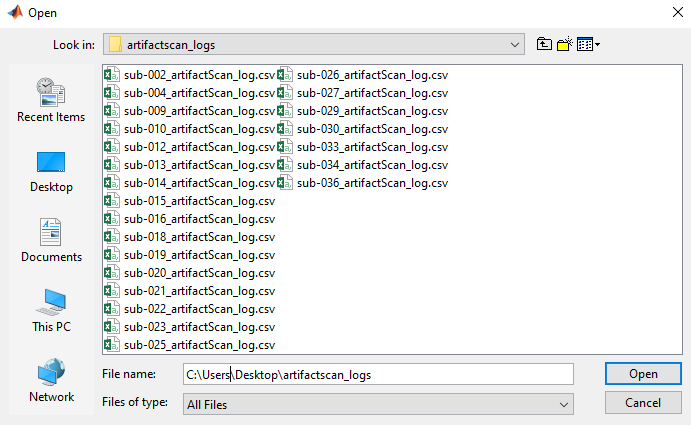
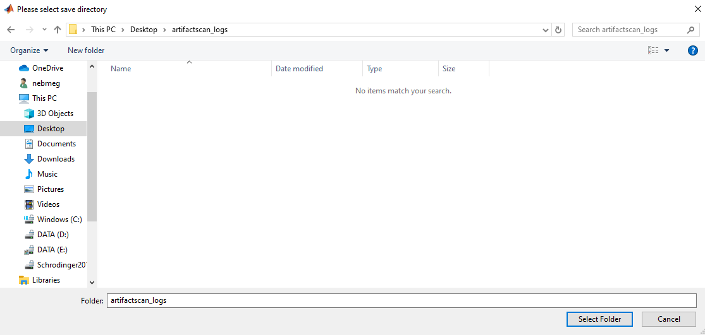

Support¶
If you are having issues, please let us know. Email Nick: nichrishayes | at | gmail | dot | com
License¶
This software is distributed under the terms of the GNU General Public License as published by the Free Software Foundation. Further details on the GPLv3 license can be found at http://www.gnu.org/copyleft/gpl.html.